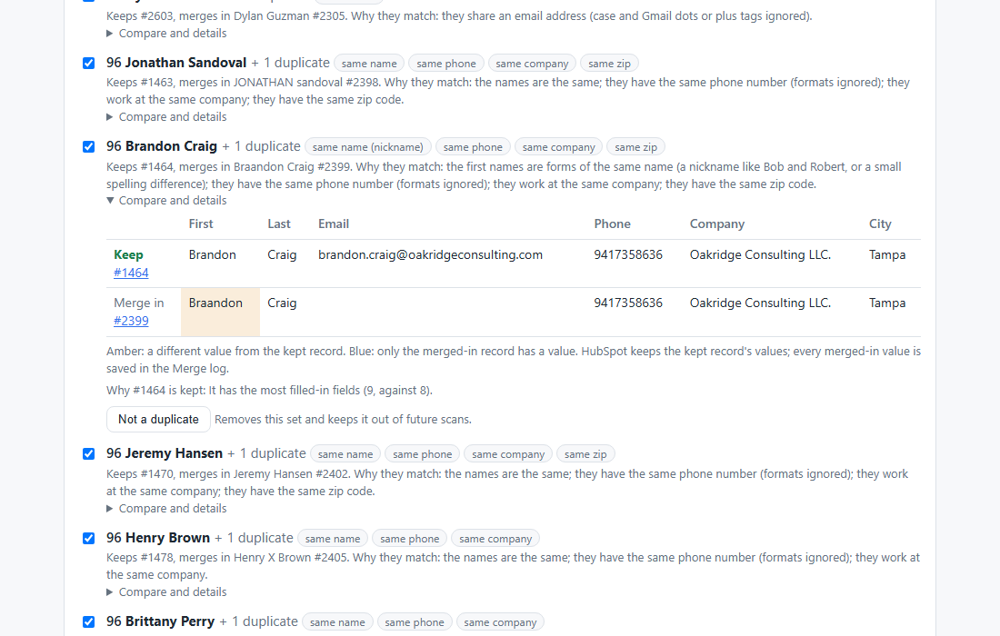

Dupe Sweep scans your contacts and companies, shows you the likely duplicates with the reason each pair matched, and merges the ones you pick. It catches what exact-match tools miss: typos in names, nicknames (Bob and Robert), phone numbers written three ways, and company names with Inc, LLC or "The" in front. It works on every HubSpot plan, including Free and Starter.
Connect HubSpot Free for 25 merges a month. No card.
Not sure yet? See what the install screen looks like and how to try it without merging anything.

| Catches | Leaves alone |
|---|---|
| Typos (Jonathan, Jonathon), nicknames, initials Phone numbers in different formats Gmail dots and plus tags Company suffixes, "The", www and https in domains | Two people with the same name at different companies Family members who share a phone Franchises with the same name in different cities Anything where the name is the only thing in common |
We tested on generated contacts and companies with known answers, including look-alike people who must not be merged. Two live runs went through HubSpot's own API on a developer test account (about 8,000 contacts and 3,000 companies in all). In the 90-and-up tier it merged no wrong records, found 85 to 86 percent of the duplicate contacts and 94 to 95 percent of the companies, and 98 percent or more once the 70 to 89 pairs were reviewed. A further 600 offline runs produced one wrong pair out of 115,886. HubSpot's own duplicate list on the same data was about three times longer than the real number of duplicate contact pairs, mostly wrong guesses. Generated data is easier than a real account, so treat these as a floor on care, not a promise: that is why nothing merges without your confirmation. Details and limits.
| Dupe Sweep | HubSpot built in | Dedupely | Insycle | |
|---|---|---|---|---|
| Price | Free for 25 merges a month; Pro $9 a month or $90 a year | Duplicate management tool needs Professional or Enterprise; bulk merge needs Data Hub Professional | From $40 a month for 30,000 records (yearly $384); price rises with record count | From $100 a month (billed yearly) for one module; price rises with record count |
| Free tier | Yes, unlimited scanning | Auto-dedupe by email (contacts) and domain (companies) on all plans | 7-day trial, 20 merges | 14-day trial, 500 records |
| Typos, nicknames, phone formats | Yes | Similarity score, method not published | Fuzzy matching | Similarity matching |
| Undo a merge | No. Log with merged-away values only | No | Yes, within 30 days | Audit trail with before and after values; undo not stated on the pricing page |
| Automatic scheduled merging, custom rules, other CRMs | No. You run it by hand, HubSpot only | Custom rules on Data Hub Professional | Yes | Yes |
Prices read from the vendors' pages on 17 November 2026 and from HubSpot's knowledge base; they change, so check before you decide. If you need undo, scheduled merging or a large team workspace today, Dedupely or Insycle fit better. Dupe Sweep is a new product with no public reviews yet.
| Free | Pro |
|---|---|
| Unlimited scanning, comparing and merge log. 25 merges a month, resetting on the 1st. | Unlimited merges for one HubSpot account. $9 a month or $90 a year (two months free). No record-count tiers. |
Pay monthly or pay yearly on Polar's checkout. The license key arrives by email; paste it into the Plan and account tab. Cancel any time from your Polar receipt, and refunds are available within 14 days.
Can I undo a merge? No. HubSpot does not let any app reverse a merge. That is why every set shows which record is kept and why, and why the confirmation lists what will merge. The log keeps every value of each merged-away record so you can recreate it by hand (how).
What will HubSpot show when I install? A permission screen listing view and edit access to contacts and companies. Until Dupe Sweep is listed on the App Marketplace, HubSpot may also show that the app has not been reviewed by HubSpot. That is accurate. What to check before you approve.
Do you keep my contacts? No. They pass through our server while you scan and are matched in your browser. We keep the merge log, your plan and the pairs you marked as not duplicates, and you can delete all of it from the app. Privacy policy.
Who is behind it? Swag Studios, a small independent studio. Email MylesCar2828@outlook.com and a person answers within two business days.
Dupe Sweep is made by Swag Studios. Contact: MylesCar2828@outlook.com. Dupe Sweep is not made or endorsed by HubSpot, Inc.
Guides: How to find duplicate contacts in HubSpot · Merge HubSpot duplicates on Free and Starter · More Myzles tools